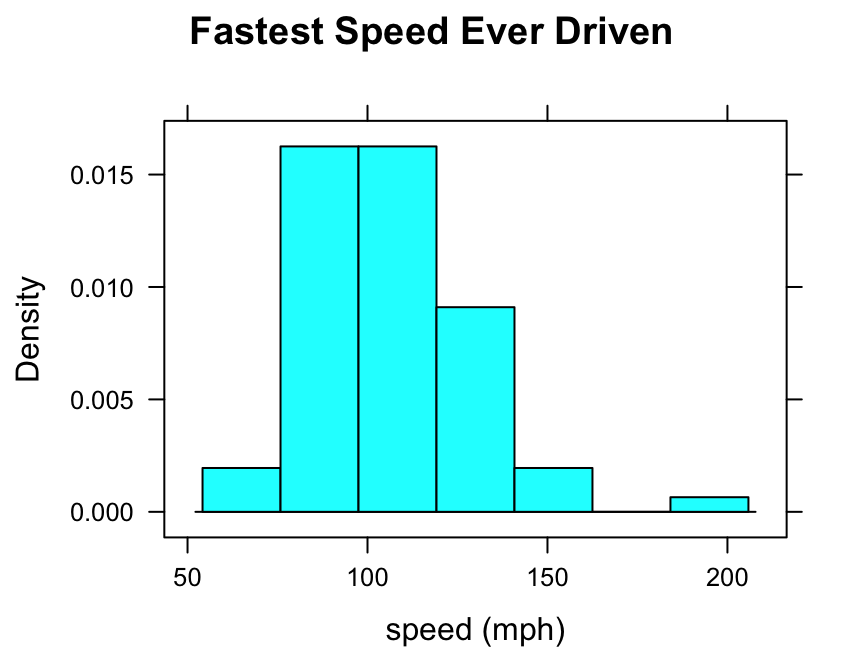
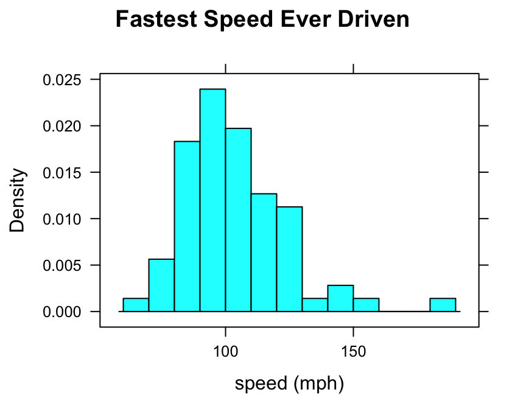
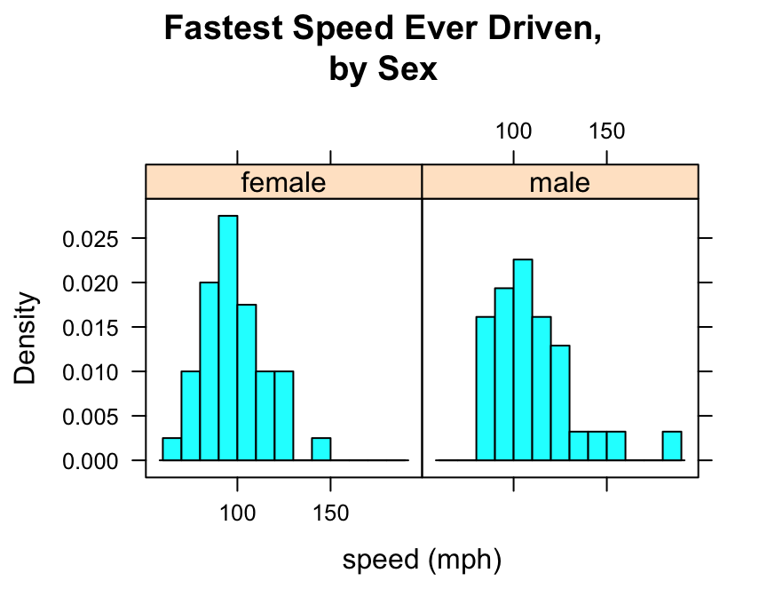
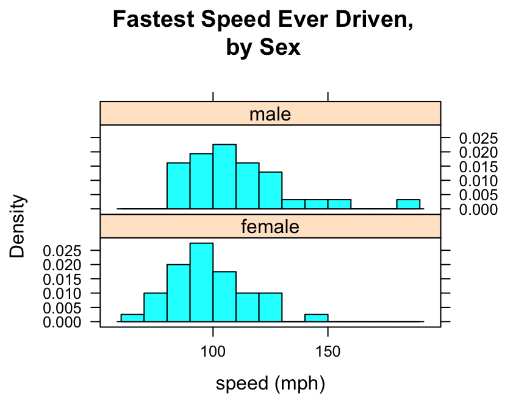

Using lattice’s histogram()
Preliminaries
The function histogram() is used to study the distribution of a numerical variable. It comes from the lattice package for statistical graphics, which is pre-installed with every distribution of R. Also, package tigerstats depends on lattice, so if you load tigerstats:
require(tigerstats)then lattice will be loaded as well. If you don’t plan to use tigerstats but you want to use the function histogram(), then make sure you load lattice:
require(lattice)Note: If you are not working with the R Studio server hosted by Georgetown College, then you will need to install tigerstats on your own machine. You can get the current version from Github by first installing the devtools package from the CRAN repository, and then running the following commands in a fresh R session:
require(devtools)
install_github(repo="homerhanumat/tigerstats")In this tutorial we will also use a function from the mosaic package, so let’s make sure it is loaded:
require(mosaic)One Numerical Variable
In the m11survey data frame from the tigerstats package, suppose that you want to study the distribution of fastest, the fastest speed one has ever driven. You can do so with the following command:
histogram(~fastest,data=m111survey,
type="density",
xlab="speed (mph)",
main="Fastest Speed Ever Driven")
Note the use of:
- the
xlabargument to label the horizontal axis, complete with units (miles per hour); - the
mainargument to provide a brief but descriptive title for the graph; - the
typeargument to make a density histogram (we like this type the most, but other possible types are “count” and “percent”).
Controlling Breaks
One of the most important ways to customize a histogram is to to set your own values for the left and right-hand boundaries of the rectangles.
In order to accomplish this, you should first know the range of your data values. You can find this quickly using the favstats() function from package mosaic:
favstats(~fastest,data=m111survey)## min Q1 median Q3 max mean sd n missing
## 60 90.5 102 119.5 190 105.9014 20.8773 71 0The minimum fastest speed is 60 mph, and the maximum fastest speed is 190 mph.
One possible choice for rectangle boundaries is to have the left-most rectangle begin at sixty, and then have each rectangle be 10 mph wide at the base, finally reaching a rectangle that ends at 190 mph. In other words, we want the rectangle boundaries to be:
\[60,70,80,90,100,110,120,130,140,150,160,170,280,190.\]
These numbers will be the “breaks” for the rectangles in our histogram. We can set these breaks by putting them, as a list, into the breaks argument of the histogram() function, as follows:
histogram(~fastest,data=m111survey,
type="density",
xlab="speed (mph)",
main="Fastest Speed Ever Driven",
breaks=c(60,70,80,90,100,110,120,130,
140,150,160,170,180,190))
You can accomplish the same thing with less typing, if you make use of the seq() function:
histogram(~fastest,data=m111survey,
type="density",
xlab="speed (mph)",
main="Fastest Speed Ever Driven",
breaks=seq(from=60,to=190,by=10))
Numerical and Factor Variable
Suppose you want to know:
Who tends to drive faster: guys or gals?
Then you might wish to study the relationship between the numerical variable fastest and the factor variable sex. You can use histograms in order to perform such a study.
Try this code:
histogram(~fastest|sex,data=m111survey,
type="density",
xlab="speed (mph)",
main="Fastest Speed Ever Driven,\nby Sex",
breaks=seq(from=60,to=190,by=10))
Note that to produce side-by-side histograms, you “condition” on the factor variable with the formula:
\[\sim numerical \vert factor\]
Note also the use of “\n” to split the title into two lines: this is a useful trick when the title is long.
You can also adjust the layout of the separate panels to your liking:
histogram(~fastest|sex,data=m111survey,
type="density",
xlab="speed (mph)",
main="Fastest Speed Ever Driven,\nby Sex",
breaks=seq(from=60,to=190,by=10),
layout=c(1,2))